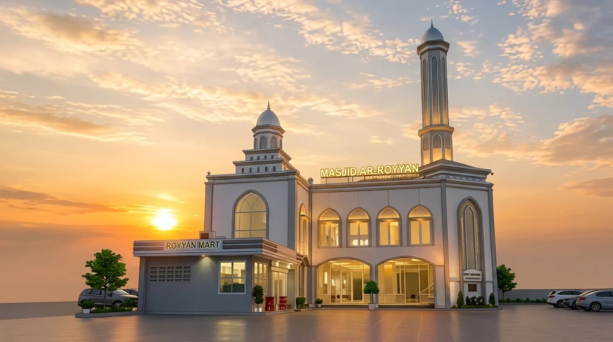
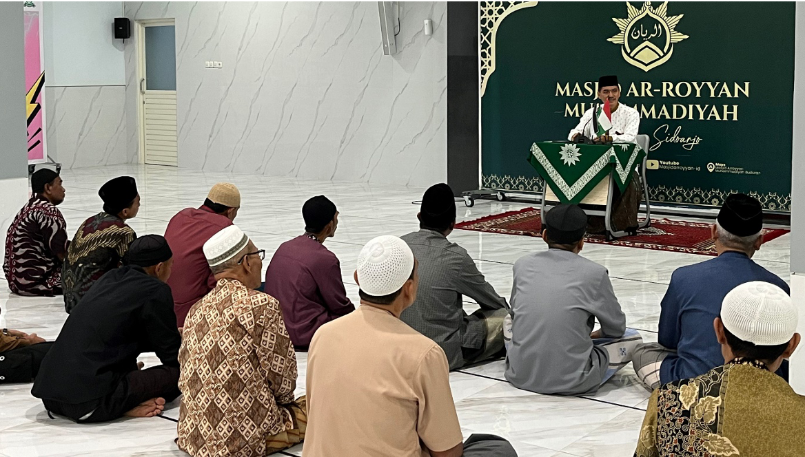
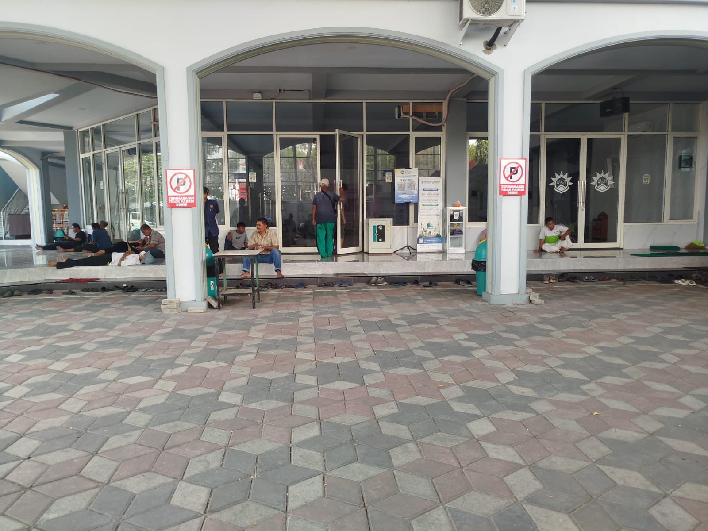
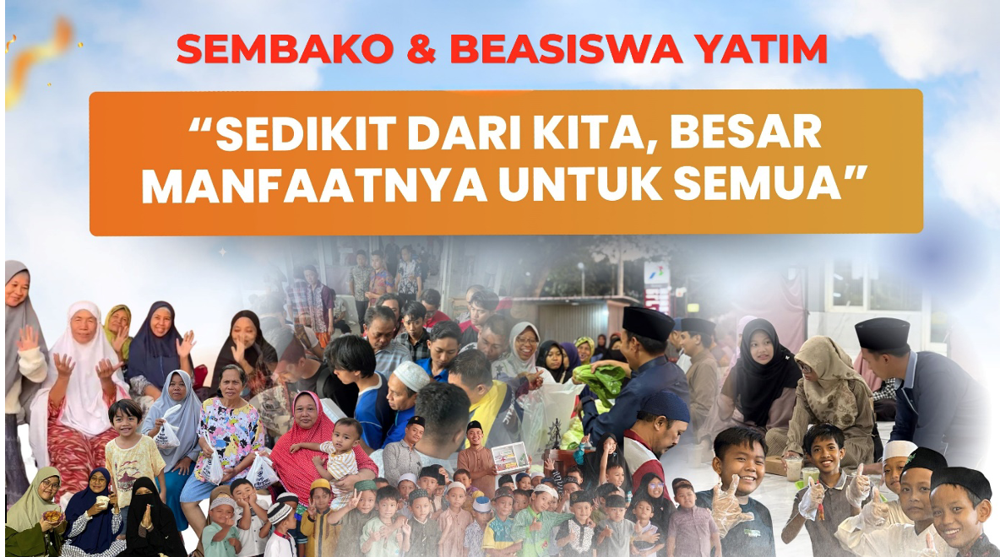
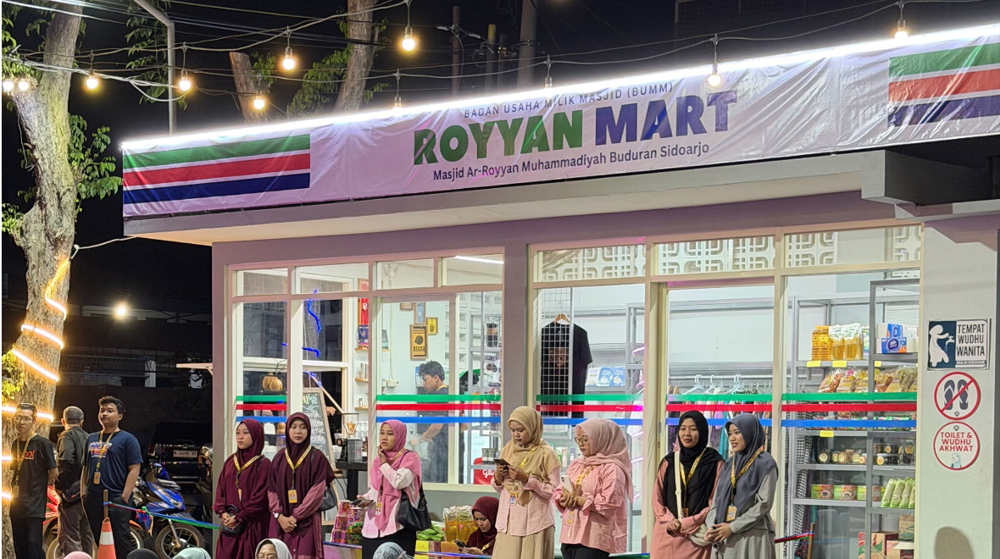
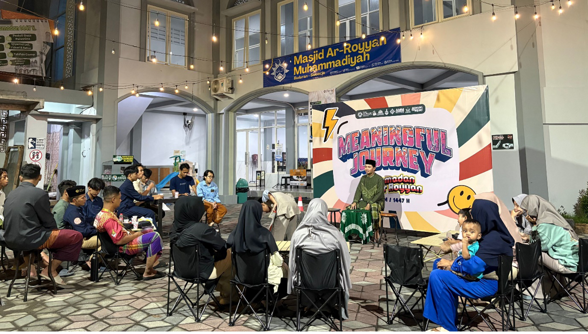
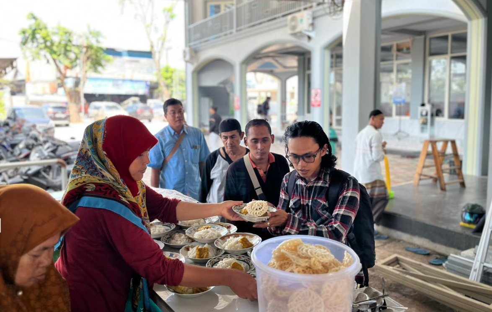

Masjid Ar-Royyan
Muhammadiyah Buduran
Mewujudkan masjid yang makmur, ramah keluarga, serta menjadi wahana dakwah pencerahan dan pembinaan ukhuwah Islamiyah di Kabupaten Sidoarjo.

Tampak Depan Masjid Ar-Royyan
Jl. Raya Lingkar Timur, Buduran, Sidoarjo
Pusat Ibadah, Dakwah, dan Ramah Musafir 24 Jam
Berdiri di atas tanah wakaf di kawasan Lingkar Timur Buduran dan diresmikan langsung oleh Ketua Umum PP Muhammadiyah Prof. Dr. Haedar Nashir pada 31 Januari 2026, Masjid Ar-Royyan hadir sebagai pusat peradaban umat yang inklusif dan terbuka 24 jam bagi masyarakat serta para musafir.
Mengusung semangat Islam berkemajuan yang digerakkan oleh sinergi lintas generasi dan anak muda, masjid ini memadukan fungsi ibadah dengan dakwah kreatif digital, layanan kesehatan, serta pemberdayaan sosial melalui ruang kajian dan Kemadjoean Café.
Visi Utama
"Menjadi masjid ramah musafir berbasis gerakan anak muda yang memakmurkan jamaah melalui dakwah berkemajuan, pelayanan sosial, dan penguatan ukhuwah Islamiyah."
Fasilitas Utama Masjid
Terbuka untuk UmumRuang Utama Shalat
Sejuk ber-AC, karpet bersih, dan nyaman untuk beribadah.
Tempat Wudhu & Toilet
Bersih dan terpisah antara area ikhwan dan akhwat.
Area Ramah Musafir 24 Jam
Terbuka 24 jam dengan fasilitas istirahat yang aman bagi musafir.
Kemadjoean Café & Kajian
Ruang ngaji santai, diskusi anak muda, dan sajian gratis jamaah.
Jadwal Ibadah & Program Masjid
Memuat Penanggalan KHGT...
Dihisab oleh Majelis Tarjih dan Tajdid PP Muhammadiyah.
Jadwal Shalat Masjid Ar-Royyan
Siwalanpanji, Buduran, Sidoarjo (Lintang -7.4286, Bujur 112.7214).
Program Masjid Ar-Royyan Muhammadiyah Buduran
Seluruh program kebaikan yang berjalan di bawah naungan Masjid Ar-Royyan Muhammadiyah Buduran

EVENT MASJIDMajelis Ilmu & Pengajian Rutin
Kajian rutin pemahaman Al-Qur'an, fikih, dan pembinaan keislaman berkemajuan bersama asatidz Muhammadiyah untuk jamaah umum.

EVENT MASJIDLayanan Ramah Musafir 24 Jam
Masjid terbuka 24 jam penuh di tepi Lingkar Timur Sidoarjo dengan ruang istirahat aman dan sajian minuman hangat gratis bagi musafir.

BAITUL MAALSembako Bahagia & Beasiswa Pendidikan Yatim
Penyaluran paket kebutuhan pokok rutin untuk keluarga dhuafa serta dukungan biaya pendidikan bagi anak-anak yatim di sekitar Buduran.

BAITUL MU'AMALAHRoyyan Mart
Unit usaha ritel milik masjid yang menyediakan kebutuhan harian halal dengan harga terjangkau untuk memperkuat kemandirian ekonomi umat.

EVENT MASJIDThe SaturNight
Agenda malam Ahad kreatif bersama remaja dan takmir muda berisi bincang santai keislaman, ngopi bareng, dan silaturahmi komunitas.

EVENT MASJIDMakan Gratis Bersama (MAGER)
Program penyediaan hidangan makan gratis setiap hari di area masjid bagi para jamaah, musafir, pekerja, dan warga yang membutuhkan.
Infaq Digital, Kontak Takmir & Peta Masjid
Dukung Program Kebaikan Masjid
Salurkan infaq terbaik Anda untuk mendukung program MAGER, Layanan Musafir 24 Jam, dan Santunan Yatim Dhuafa.
Kontak Layanan Takmir
Butuh informasi jadwal kajian, konfirmasi infaq, atau koordinasi rombongan musafir? Hubungi narahubung resmi kami:
Media Sosial Resmi
Ikuti dokumentasi kajian dan pengumuman terbaru di platform kami:
Lokasi Masjid Ar-Royyan
Jl. Raya Lingkar Timur, Siwalanpanji, Kec. Buduran, Sidoarjo
Patokan Lokasi: Berada tepat di tepi Jalan Raya Lingkar Timur Sidoarjo (sebelah SPBU Siwalanpanji). Akses sangat mudah dijangkau kendaraan roda dua, mobil pribadi, maupun rombongan bus musafir.